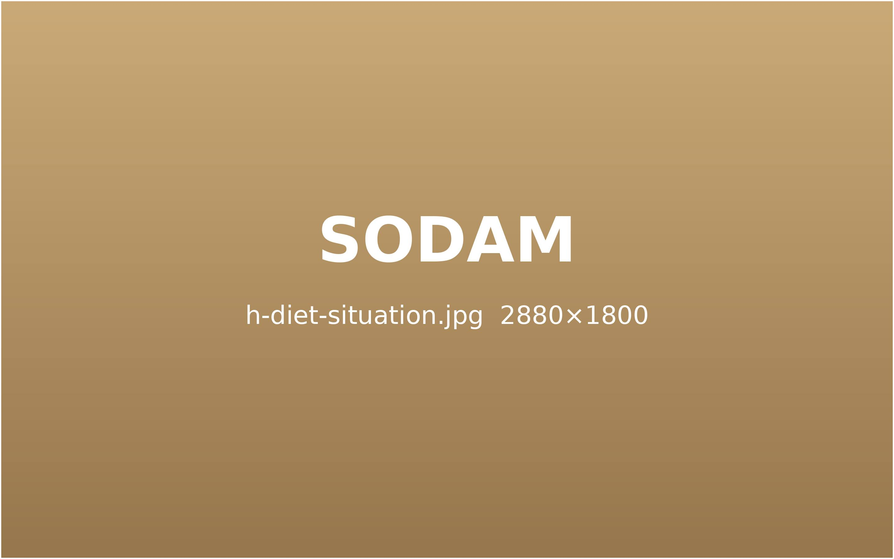
지금 필요한 다이어트를
소담에서
결혼, 출산, 갱년기, 바쁜 회사 생활 — 상황이 다르면 몸이 필요로 하는 관리도 다릅니다.
생활에 맞춰 무리 없이 이어 갈 수 있는 방법을 함께 찾습니다.
웨딩 다이어트
D-Day에 맞춘 집중 관리
예식 날짜를 기준으로 감량 · 붓기 · 피부 컨디션 일정을 거꾸로 짭니다.
무리한 감량 없이, 촬영과 본식 날 가장 좋은 상태가 되도록 조율합니다.
전신 감량을 위한
다이어트 환
팔뚝 · 등 · 턱선
약침 집중 관리
피부결을 돕는 한약과
뷰티 클리닉
가장 특별한 날, 가장 편안한 모습으로.
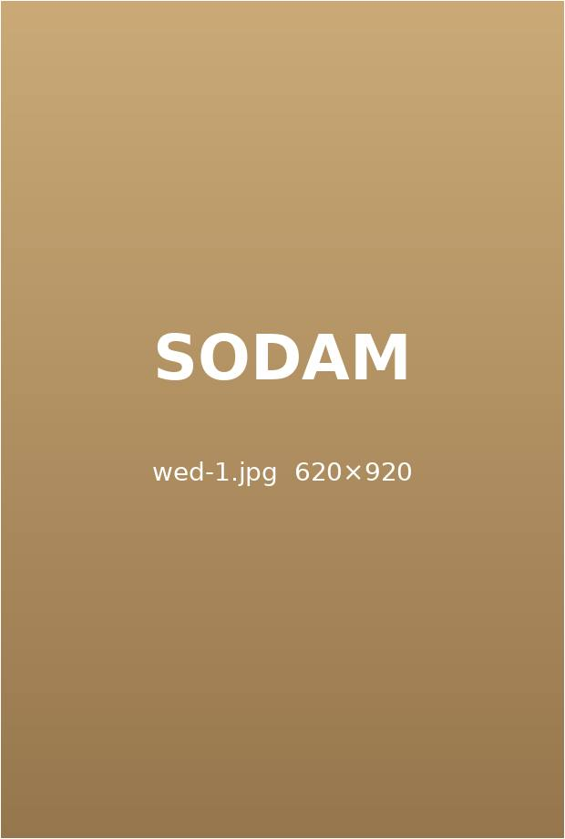
D-Day 붓기 관리
예식이 가까워질수록 붓기를 줄이는
순환 중심 관리
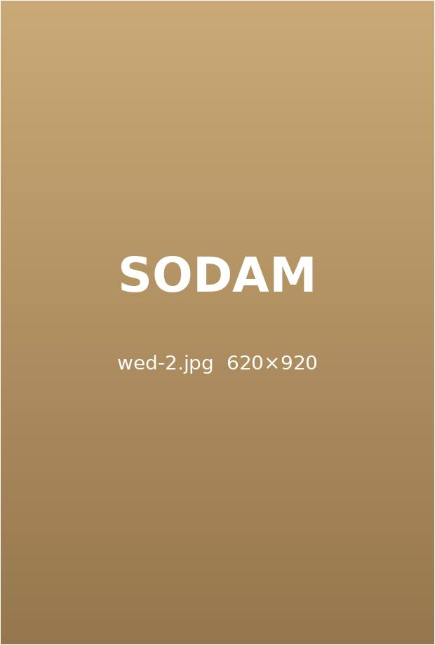
피부 컨디션 조율
촬영과 본식 일정에 맞춰
몸과 피부 상태를 맞춥니다.
준비 스트레스 관리
결혼 준비로 쌓이는 긴장을
함께 다스리는 처방
웨딩 다이어트 핵심 부위
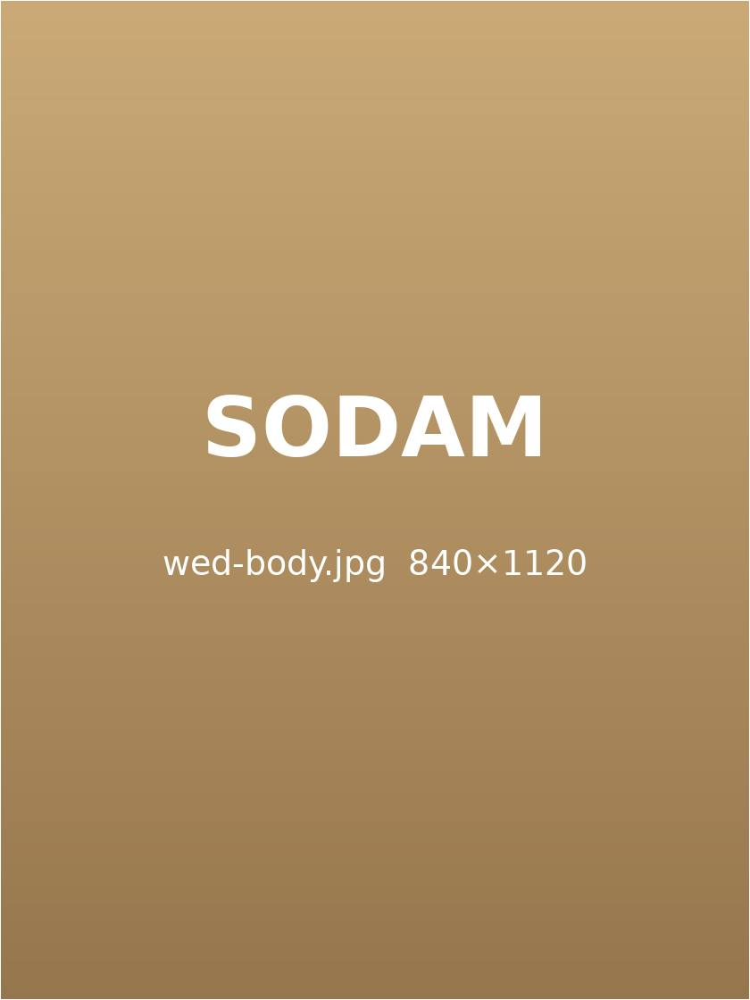
목 · 어깨선을 정리합니다.
약침과 환을 병행합니다.
허리선을 정돈합니다.
매끈한 라인을 만듭니다.
길고 가볍게 다듬습니다.
산후 다이어트
출산 후, 가벼움을 되찾는 시간
회복 단계와 수유 여부까지 살펴 처방합니다.
붓기 · 순환 저하 · 호르몬 변화를 함께 돌보며 무리 없는 회복형 감량을 진행합니다.
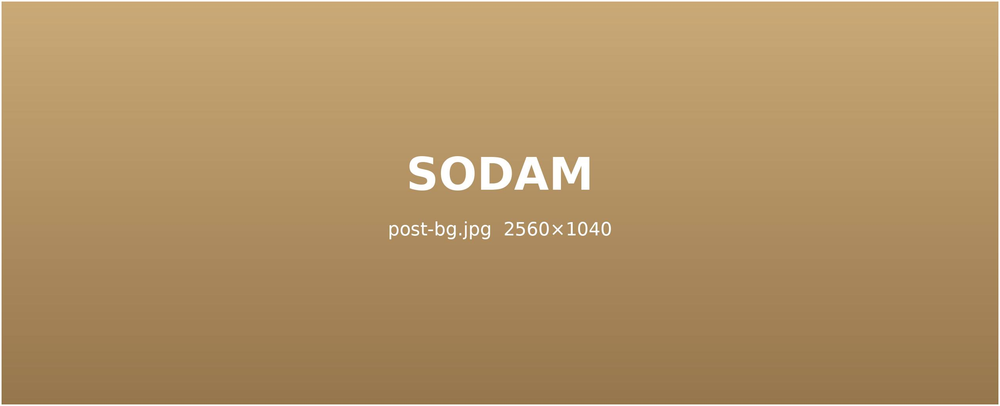
출산 뒤,
왜 살이 잘 빠지지 않을까요?
임신과 출산 과정에서 쌓인 붓기, 늘어난 체지방, 달라진 호르몬에 육아로 줄어든 활동량이 겹치기 때문입니다. 몸의 회복 속도에 맞춘 관리가 필요합니다.
회복 속도에 맞춘 3단계 산후 프로그램
붓기 · 부종 개선
부담이 적은 탕약과 순환 치료로 산후 붓기와 하체 부종을 먼저 정리합니다.
체지방 감량
회복 속도와 체질을 살펴 단계별 다이어트 환으로 본격적인 감량을 돕습니다.
복부 집중 관리
탄력을 잃은 복부를 약침과 한약으로 함께 관리합니다.
갱년기 다이어트
체질 관리로 편안한 갱년기
호르몬이 바뀌며 예전처럼 살이 빠지지 않는 시기입니다.
갱년기 증상을 함께 다스리며 몸의 선과 컨디션을 되찾도록 돕습니다.
갱년기 체중이 늘어나는 이유
나잇살로만 넘기기 어려운, 몸의 변화가 겹쳐 나타납니다.
복부 지방 증가
감소
식욕 증가
폭식
순환 저하
갱년기 다이어트 핵심 관리
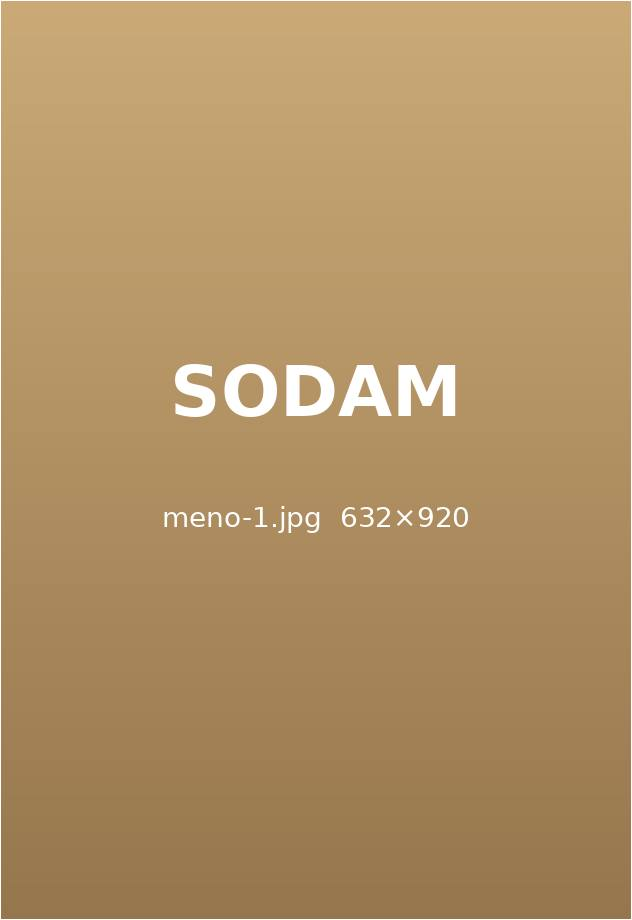
긴장된 신경과 자율신경을 안정시켜 과식과 폭식을 줄입니다.
감정 기복 관리
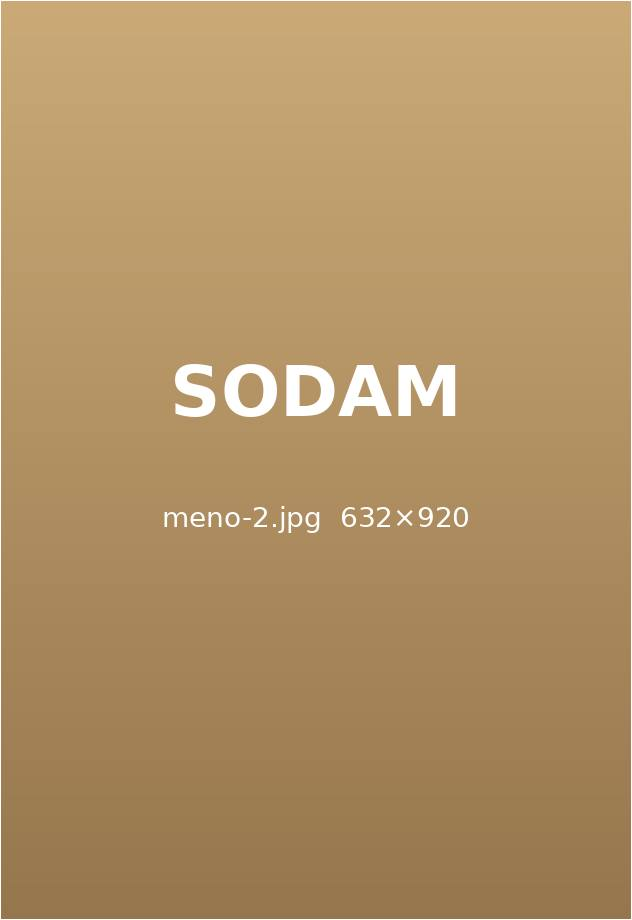
잠을 깊게 자도록 돕는 처방으로 밤중 식욕을 다스립니다.
수면 질 개선
림프 순환을 도와 하체와 복부의 붓기를 정리합니다.
순환 · 붓기 관리
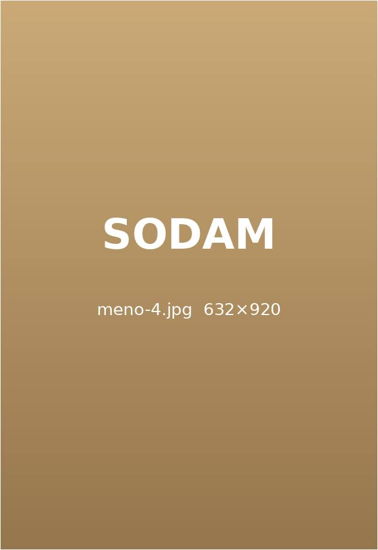
내장지방이 늘기 쉬운 복부 · 옆구리를 약침으로 관리합니다.
복부 약침
직장인 다이어트
바쁜 하루에도 이어 가는 다이어트
야근과 회식, 운동할 시간이 부족한 직장인을 위해
간편한 다이어트 환과 1:1 코칭으로 일상 속 가벼움을 찾아 드립니다.
생활 패턴에 맞춘 직장인 다이어트
스트레스성 폭식 관리
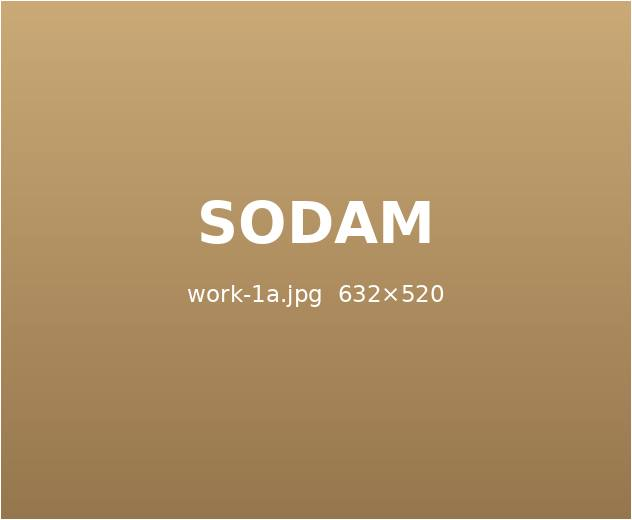
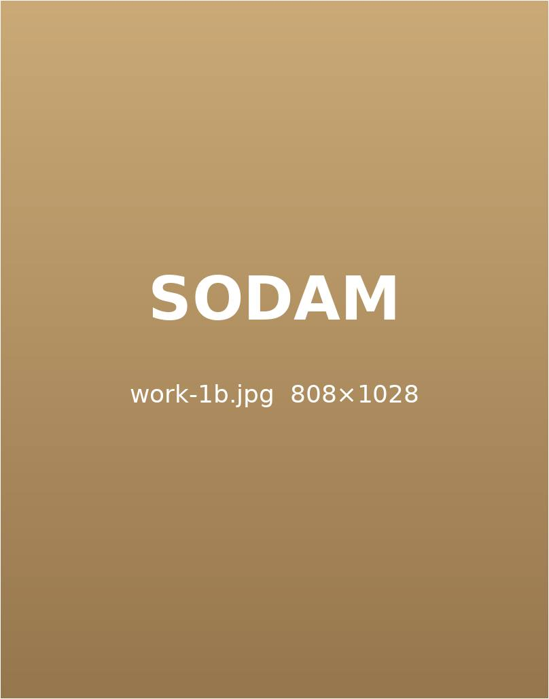
스트레스가 쌓이면 식욕과 야식 충동이 커집니다. 답답함과 더부룩함을 함께 풀어 폭식을 줄입니다.
야근 맞춤 관리
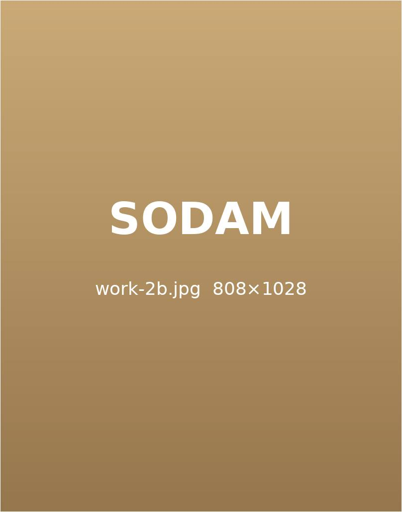
늦게 자고 늦게 먹는 리듬까지 고려해 수면과 식욕 리듬을 바로잡습니다.
회식 대비 관리
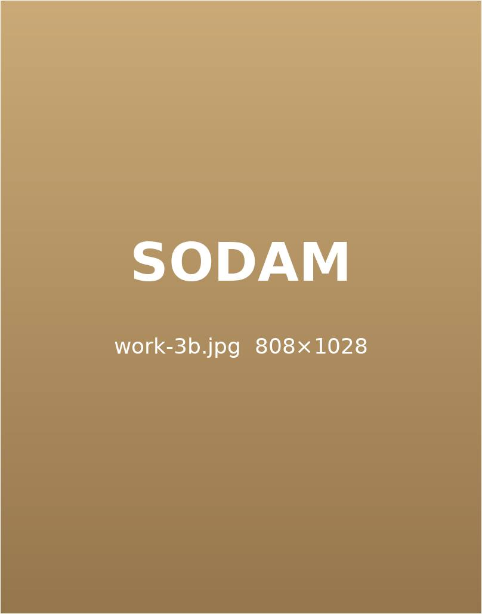
잦은 회식 뒤에도 흐름이 끊기지 않도록 붓기와 소화를 함께 관리합니다.
직장인이 자주 겪는 세 가지 고민
하루 대부분을 앉아 보내면 하체 순환이 떨어지고 붓기가 쌓입니다.
하체 붓기순환 저하끼니를 거르다 몰아 먹으면 혈당이 출렁여 지방이 쌓이기 쉽습니다.
몰아 먹기혈당 변동짧은 시간에도 할 수 있는 생활 운동과 처방으로 대사를 유지합니다.
생활 운동대사 유지
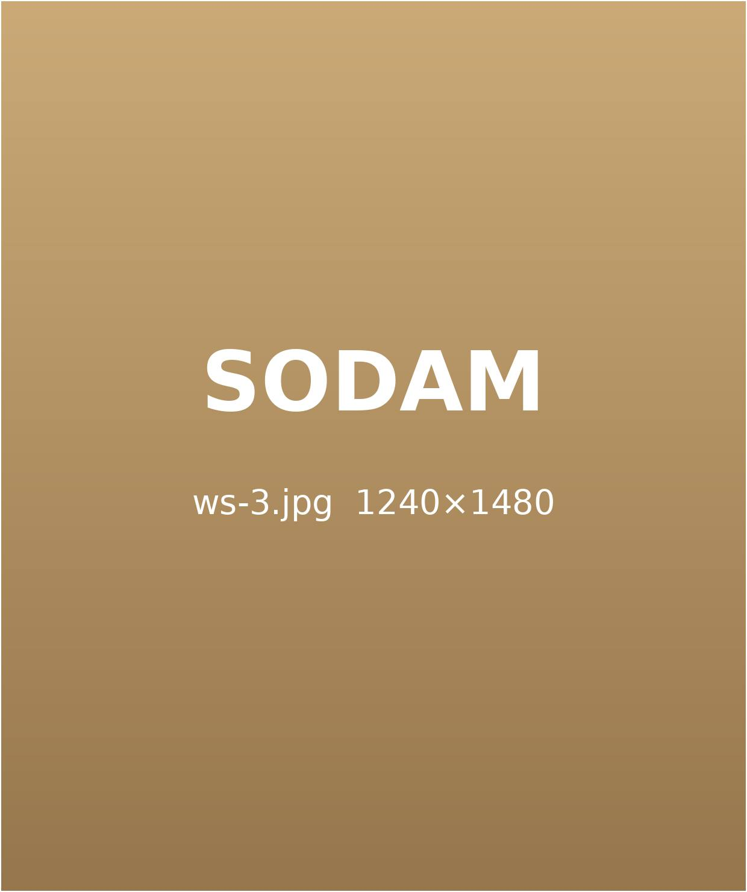
함께 만들어 가는 다이어트
숫자보다 몸의 상태를
먼저 봅니다.
체중계 숫자만 쫓지 않습니다. 붓기 · 수면 · 소화 상태까지 함께 확인하며 속도를 조절합니다.
끝까지 함께 점검합니다.
정기적인 상담으로 식단과 생활 리듬을 점검하고, 처방을 몸에 맞게 다듬어 갑니다.
소담 상황별 다이어트의 특징
상황 맞춤 설계
상황 맞춤 설계
결혼 · 출산 · 갱년기 · 직장 생활처럼 지금의 상황을 먼저 듣고 일정을 짭니다.
체질 맞춤 처방
체질 맞춤 처방
같은 상황이어도 체질에 따라 처방을 달리해 부담을 줄입니다.
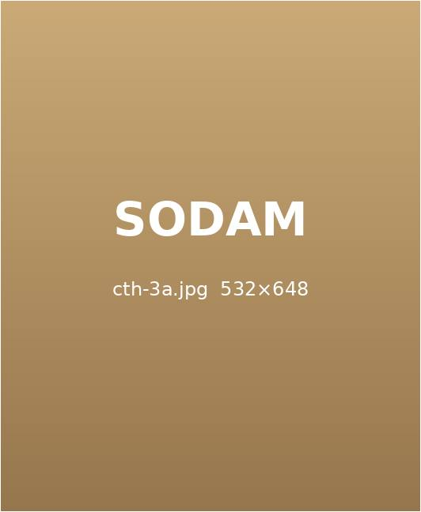
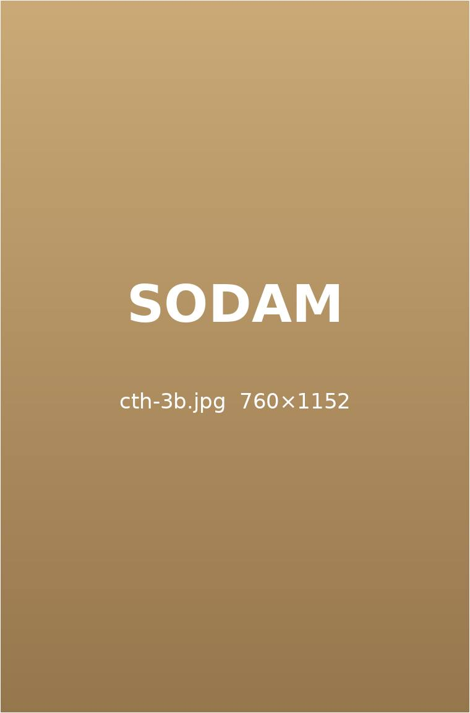
회복까지 관리
회복까지 관리
감량 뒤 몸의 컨디션이 흔들리지 않도록 유지 관리까지 이어 갑니다.